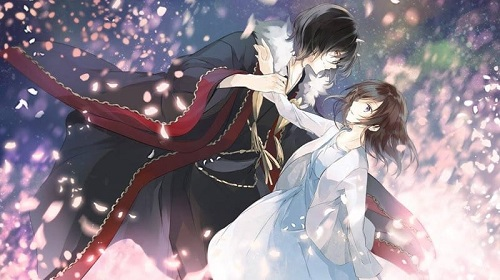
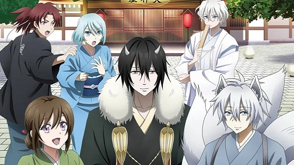

Kakuriyo No Yadomeshi: Ayakashis secuestrando a una humana.
Aoi, una estudiante universitaria, heredó la capacidad de su difunto abuelo de poder ver a los llamados Ayakashi, seres que no pertenecen a este mundo como ogros o tengus. Un día, mientras Aoi está de camino a la universidad, aparece un ogro que le declara la deuda que tenía pendiente con su abuelo y que, como compensación por no haber podido pagarla, debe casarse con él.
Tras la negación de Aoi ante esta petición, decide que va a intentar pagar esa deuda trabajando en el mundo oculto, es decir, el mundo de los Ayakashi. Para ello montará un restaurante utilizando las habilidades culinarias que su abuelo le enseñó para alimentar a estos seres misteriosos. Pero, ¿qué pasará si Aoi no puede pagar la deuda en el tiempo establecido?
Me sorprendió que el anime no tratara de comida en si, ya que en cada capítulo Aoi preparaba un platillo nuevo. Desde el primer episodio la historia me atrapó y conforme va avanzando se van aclarando varias dudas del porqué el abuelo de Aoi terminó ofreciendola como pago.